| |
Texas/Rocky Mtn Road Trip
Las Vegas/Castles'N'Coasters Six Flags Fiesta Texas Schlitterbahn
Sea World San Antonio Gavelston Pier
Six Flags Over Texas Silver Dollar City Frontier City
Colorado
Elitch Gardens
Lakeside Park Glenwood Springs
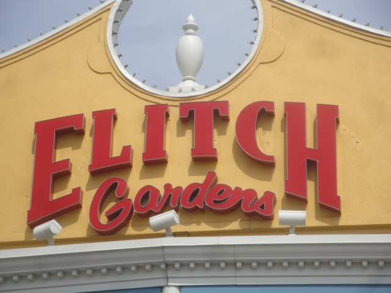
All right. Todays the day we hit up the Denver Parks, Elitch Gardens & Lakeside Park. And so yeah. We're here at Elitch Gardens to start out the fun.
"Oh come on!!! Are you f*cking serious!!!?"
Well at least I don't have to worry about not seeing Denver since I visited Elitch Gardens.
 Well since the half pipe is closed, lets move onto the next best ride in the park.
Well since the half pipe is closed, lets move onto the next best ride in the park.
Better keep climbing all those stairs. Its a long way up to the station.
Nice view of Denver from the Sidewinder Station.
 Yep. Sidewinder is another one of those funky Arrow Shuttle Loops.
Yep. Sidewinder is another one of those funky Arrow Shuttle Loops.
 I love these rides. They're just a ton of fun, plus they have some decent backwards airtime. =)
I love these rides. They're just a ton of fun, plus they have some decent backwards airtime. =)
 Under the loop shot of Sidewinder.
Under the loop shot of Sidewinder.
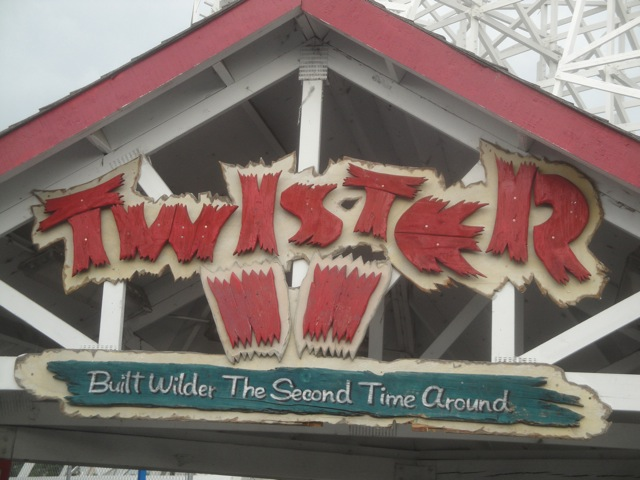
All right. Time for essentially the only other unique ride in the park. Twister II.
For those who didn't know, Twister II originally started out as Mr. Twister when Elitch Gardens first opened. But then they moved, couldn't relocate Mr. Twister, so they built Twister II in its memory.
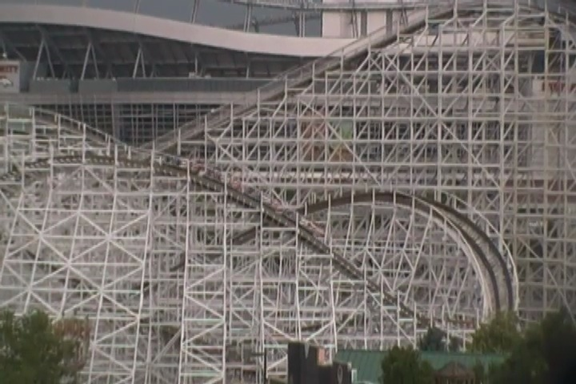
Twister II is a very...odd wooden coaster.
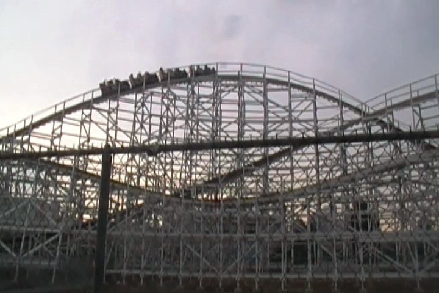
Its not a good coaster, but its not a bad coaster either.
 Its ok, but you can easily tell with all the trim brakes that this can be a much better ride.
Its ok, but you can easily tell with all the trim brakes that this can be a much better ride.
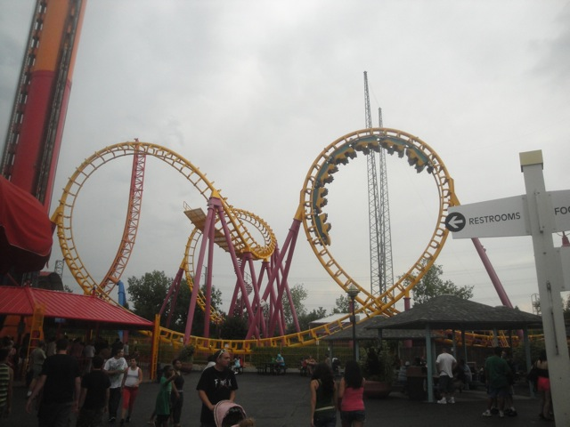
And from here on out, everything is a generic clone. As demonstrated by this Boomerang.
Now to be fair to Elitch Gardens, its a really well run and smooth Boomerang. Not rough in even the slightest bit and definetly one of the best Boomerangs I've ridden.
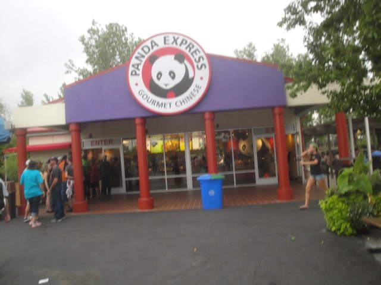
I really try to avoid over-priced park food as much as possible, but when the day before, the only thing you ate was a peice of toast with jam on it, judgement becomes kind of hazy.
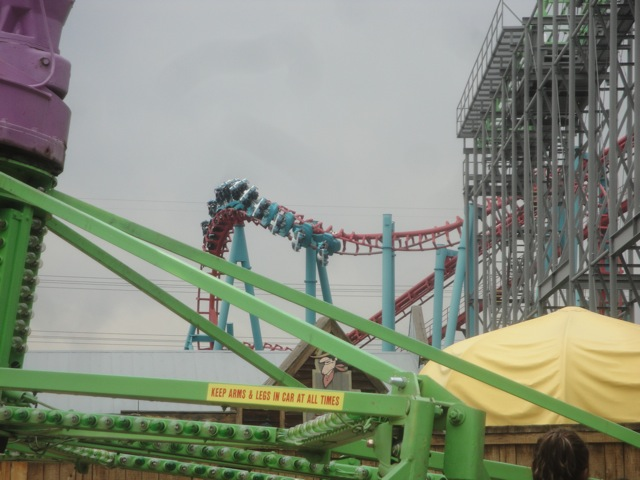
Continuing with the theme of average rides, look whats next.
 Considering the line for this ride, I see everyones minds have been erased already.
Considering the line for this ride, I see everyones minds have been erased already.
 From what I kept hearing from Cody, this was the smoothest SLC ever and that it must be ridden in the front.
From what I kept hearing from Cody, this was the smoothest SLC ever and that it must be ridden in the front.
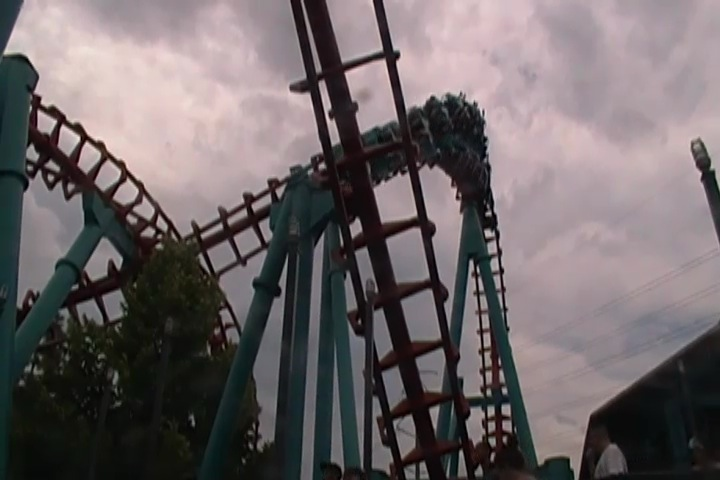
Nope. Not the case. While its FAR from the worst SLC ever and it doesn't really hurt much, it definetly isn't smooth as there seemed to be something with the track. Almost as if there were bumps on it or something to make it vibrate. It jolted me foreword and backward more than side to side. So there was no headbanging, but yeah. It wasn't smooth.
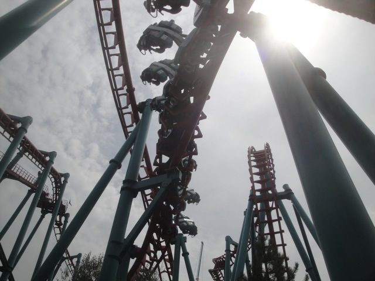
Not a bad ride, but (with Half Pipe down) I'd call Sidewinder the star attraction of the park.
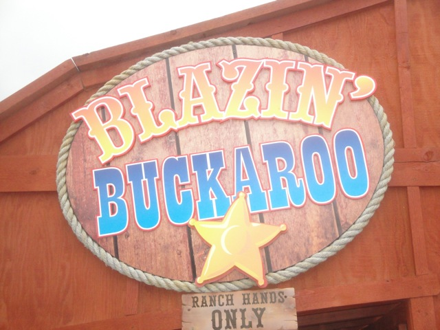
Just one last credit left to get here.
Hey, it may have been embarrassing, but at least I got this credit without any hassle.
*Sigh* Quit taunting me.
"Excuse me, but what time will the Half Pipe open today?"
Its a shame that Half Pipe was closed (and not because I'm missing a credit). I rode the half pipe at Nickelodeon Universe, and loved it. And considering how boring the coaster collection is here, they DESPERATELY need Half Pipe to be open.
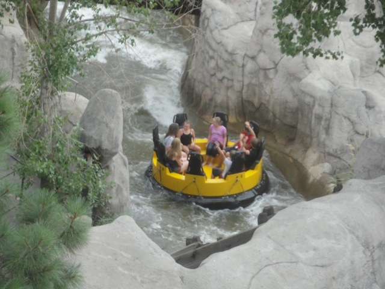
I'm taking my job to Denver with me and making sure no one stands up on the rapids ride. =)
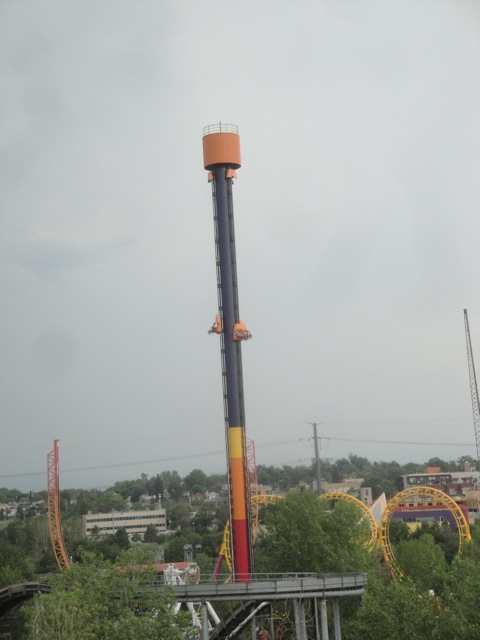
You know, I had low expectations for this drop tower because of its small size, but it managed to pack a nice little punch. =)
But really. I'm just glad that this ride had a single riders line. Saved me a good bit of time.
Well another thunderstorm has come and shut down everything. All thats open are the small flat rides, so I (and everyone else) just waited it out so I could at least ride something. And hey, these are fun flat rides.
 Well, rides are open, and this is the only thing open worth reriding.
Well, rides are open, and this is the only thing open worth reriding.
 These Arrow Shuttle Loops are actually really fun rides. I just wish they caught on more.
These Arrow Shuttle Loops are actually really fun rides. I just wish they caught on more.
Good to see some parks giving a damn about this issue.
Its a nice looking breakdance, but it doesn't run a very good program.
Well that was Elitch Gardens. Its a nice park. I can't complain about anything really. They run everything really well and are really friendly. They just need better rides. I would really like to come back to Elitch Gardens and see a great new unique coaster built here. This park needs and deserves it.
Lakeside Park
Home
|